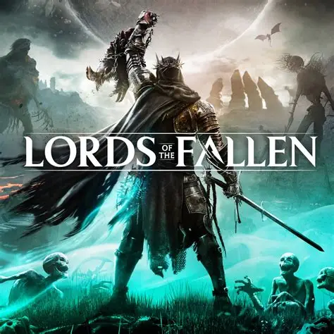
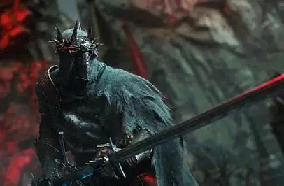
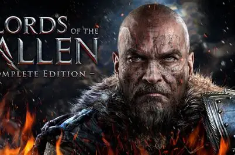

Lords Of The Fallen

Aqui está um resumo completo, estruturado e pronto para publicação no seu site sobre o jogo [Lords of the Fallen] (lançado pela [CI Games] e desenvolvido pela [Hexworks] Este texto destaca os principais pontos que os leitores e gamers procuram: Lords of the Fallen: O Renascimento do Souls-like em Dois Mundos Lords of the Fallen é um RPG de ação e fantasia sombria que serve tanto como uma sequência espiritual quanto como um reboot do título homônimo de 2014. Totalmente reconstruído na Unreal Engine 5, o jogo entrega um dos visuais mais impressionantes e imersivos do gênero souls-like, corrigindo os problemas de movimentação travada do passado e expandindo o mapa em um universo cinco vezes maior e totalmente interconectado. 📜 A História e o Cenário A trama se passa mais de mil anos após a derrota do deus demônio Adyr. Com a iminente ressurreição dessa divindade maligna, o mundo corre o risco de mergulhar novamente no caos. O jogador assume o papel de um Dark Crusader (Cruzado Negro), que carrega uma lanterna mística e tem a missão de purificar os cinco bastiões da luz para impedir o retorno do tirano. ## 🔄 A Mecânica dos Dois Mundos (Axiom e Umbral) O grande diferencial de Lords of the Fallen é o seu sistema de dimensões paralelas que coexistem em tempo real: * * Axiom: O reino dos vivos, marcado por cenários medievais decadentes. * Umbral: O reino dos mortos, um lugar hostil, repleto de criaturas horripilantes e segredos escondidos. * Usando a Lanterna Umbral, você pode espiar a dimensão dos mortos para encontrar caminhos invisíveis no mundo normal ou atravessar voluntariamente para lá. Além disso, o Umbral funciona como uma segunda chance: caso você morra em Axiom, ressuscitará imediatamente no reino dos mortos para tentar sobreviver e encontrar uma saída. ## ⚔️ Jogabilidade, Classes e Combate * * Variedade de Classes: O jogo conta inicialmente com 9 classes disponíveis (como o Cavaleiro Sagrado e o Cultista do Fogo) e outras 4 desbloqueáveis, permitindo moldar o personagem de acordo com seu estilo. * Combate Técnico: O sistema é focado em precisão, trazendo mecânicas como o Soul Flay (que arranca a alma do inimigo para causar dano direto) e o wither damage (dano cinzento recuperável ao contra-atacar). * Magia e Customização: Existem três tipos principais de magia: Radiant, Rogar (Infernal) e Umbral, que influenciam tanto o combate quanto a descoberta da própria história do jogo. * Multiplayer sem Barreiras: O game traz um modo cooperativo online fluido e sem interrupções, permitindo jogar com amigos do início ao fim, além de contar com mecânicas de invasão PvP. *

